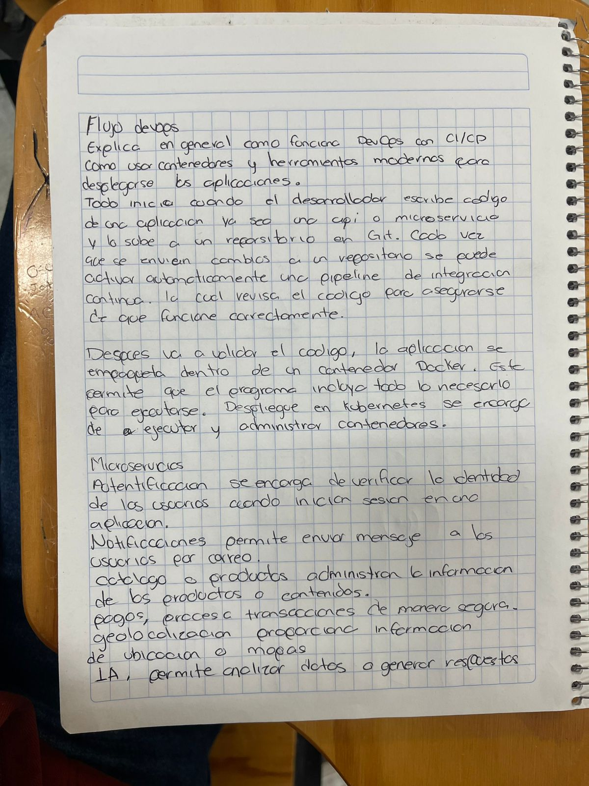

Descripcion: Desarrolle una sinopsis de una cuartilla referente a los microservicios del punto y del flujo devops del punto, escribirla a mano alzada y después tomar una fotografía y subirla en formato PDF en esta actividad.
Fecha: 26 Febrero 2026
Aprendizaje: Comprendi como los microservicios permiten dividir aplicaciones y como DevOps mejora el desarrollo continuo.
Reflexion: Me ayudo a entender como se desarrollan sistemas modernos de forma eficiente.
